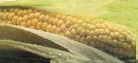
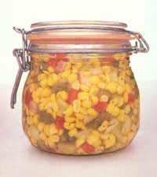

KITCHEN GARDEN
Nothing else says "garden fresh" quite so sweetly.
Corn ( Zea mays ) is more American than apple pie. It's believed that an early type of this member of the grass family was grown in South America at least 4,000 years ago, and it's known that corn was cultivated throughout much of North America long before the time of Christopher Columbus. He and his explorers are credited with introducing corn to Europe, where it spread throughout the continent and to Asia and Africa. Europeans still use it primarily as a food for livestock. In the United States, however-though 80% of our corn is fed to animals-even growers with small gardens are likely to plant this space-consuming vegetable, and for a very valid reason: The sugar in most corn varieties starts changing to starch as soon as it's picked, so ears that go straight from the stalk to the pot or freezer offer a succulent taste that corn purchased from a market, or even a roadside stand, can never match.
There are literally hundreds of cultivated varieties of corn, but they fall into four classes: popcorn ( Z. mays praecox ), a low-calorie, nutritional snack; dent, or field, corn (Z. m.indentata), used mostly for animal feed but also popular in the South as a fried dish, and the source of cornmeal; Indian, or flint, corn ( Z m. indurata ), with colorful ears that are used for ornamental purposes (the inner pan of the grain that remains once the hull is removed is called hominy, which, ground up, becomes grits); and sweet corn ( Z. m. rugosa ), the popular choice for most home gardens.
Though sweet corn as we know it wasn't developed until just over a century ago (and the now-popular hybrids began appearing 30 years later), today's gardeners can choose from early, midseason or late varieties that sport either yellow or white kernels or a mixture of both. There are also dwarf types as well as "skyscraper" varieties that reach heights of 12 feet, and new offerings come on the market every year.
Some popular early varieties of sweet corn, which take 58 to 70 days to mature, are Spring Gold (withstands cold and damp soil and produces large ears), Seneca Explorer (also popular in cold-weather areas), Silver Sweet (a white type similar to the late-season Silver Queen but which matures in 66 days), Butter Vee (ready in only 58 days with a high sugar content) and Aztec (resists some strains of wilt and tolerates smut). .
Midseason varieties, maturing about a week later than early types, include the open-pollinated, low-starch Early Gold Bantam, which retains its sweetness for a long time; Gold Rush, a tender, sweet, yellow corn that adapts to most climates; Mellow Yellow, which freezes well; Kandy Korn EH, as sweet as its name and whose kernels can retain their quality for up to two weeks on the stalk; Aristogold, which grows well in dry conditions; Honey and Cream, a bicolor with a tight husk that discourages earworms and other insects and Platinum Lady, a delicious white variety.
Of the late season types. Country Gentleman and Golden Bantam-both open-pollinated-have been favorites since they were developed many decades ago. Seneca Pinto, Sugar Dots and Silver-N-Gold are all sweet, bicolored cultivars, and the very late and very popular Silver Queen is a white corn that takes 92 days to mature but is well worth waiting for.
Among the dwarfs. Golden Midget (58 days) grows on stalks only 2½' tall, and its 4" long ears freeze well; Honey Cream, with 6" to 7" ears, is another good choice for a small garden.
For popcorn, try White Cloud or Japanese Hulless. Both pop big and have no hulls. Then there's the unique Indian Ornamental Pop that's both tasty and decorative. Ornamental corn, however, requires hot weather and a long growing season. Indian Ornamental, for example, takes 110 days to mature, producing large ears in an endless array of colors. Field corn, called "roasting ears" by those southern gardeners who relish them, has to be picked early before it becomes too tough to eat. Hickory King, which comes in both yellow and white versions, is a popular field variety.
Gardeners who are impatient for the first possible taste of homegrown corn sometimes take the risk of planting two weeks before the last frost date. Should you do this, be prepared to risk losing your crop since corn is very susceptible to frost. Other eager growers, particularly those with short gardening seasons, start the seeds indoors. Corn, however, doesn't transplant well, so it should be started in peat pots in order to disturb the roots as little as possible when moving it to the garden. It's usually better to wait until all danger of frost is past, and then, in order to have a long harvest, plant early, midseason and later varieties at the same time-or plant an early variety every two weeks for six weeks or when the preceding crop is 3" tall. A scarecrow might help keep birds from stealing the seeds before they can sprout and from eating the small shoots. Some people say a string stretched a few inches above the row, especially if hung with foil pie pans, will also discourage these thieves.
Plant corn in a sunny but wind-protected spot. While it will grow in almost any soil, the vegetable does best in well-worked, fertile soil with good drainage and a pH of 6.0 to 6.8. Because it's a heavy feeder, especially on nitrogen, it's best to plant corn where beans were raised the previous season or in an area where other legume crops, such as alfalfa or clover, have been cultivated recently. (Some Native Americans bury a fish under each hill of corn to help provide needed nutrients.) Work in generous amounts of compost or aged manure, along with bone meal and wood ashes, to a depth of 6". If the soil is not very fertile, you should probably side-dress the crop when it's about 6" tall and again at about knee-height. Blood meal or a diluted fish-based fertilizer are good for this purpose.
For best germination, the temperature of the earth should be approximately 60°F. If the weather stays unseasonably cool, you can hurry the warming process by covering your future corn patch with black plastic.
Since a stalk of corn typically produces only two ears per plant (except for some dwarf varieties, which have four), plan on a minimum of 10 to 15 plants per person.
Corn is wind-pollinated (each silk on the ears must receive pollen from the tassels on top in order to produce a kernel), so it generally does better planted in blocks rather than rows. You can also put five seeds to a hill and then thin to the three strongest plants.
Since corn has a 75% germination rate, plant the seeds 2" deep, placing three kernels every 8" to 12", and thin the stalks to 10" to 12" apart. (Dwarf varieties are generally planted 1" deep and thinned to an 8" spacing.) Rows should be 3' apart (2' for dwarfs). Use care when thinning plants so as not to disturb the roots of those you keep. The seeds should germinate in seven to ten days, and you'll need to keep the weeds away, since this grasslike plant doesn't compete well. Mulching with straw, leaves or grass clippings can solve this problem and will also conserve moisture. And corn does require a lot of water, especially when the tops begin to tassel. (Don't wet down flowering tops, though, since that could wash off the pollen.) Stop weeding at tasseling time to avoid damaging the surface roots.
As the plants grow, they will put out side shoots, or "suckers." These don't harm production, however, and cutting them off might damage the roots.
Since corn takes up a considerable amount of space in the garden, it only makes sense to intersperse it with another crop. With medium-size varieties, you might want to plant half-runner beans. With tall varieties, pole beans can twine up the stalks. Pumpkins and squash are other good choices.
Stewart's disease, a bacterial wilt that causes the plants to become dwarfed and dried-up, can attack any type of sweet corn but seems to favor yellow varieties. If you've had this problem, choose a corn that's resistant to the malady. Because the ailment is spread by flea beetles and cucumber beetles, which thrive in plant refuse, keep your garden clean and burn infected plants.
Corn smut looks worse than wilt, but it's usually less damaging. It appears on the ear as a pale, shining, swollen area that darkens and bursts, releasing powdery black spores. It can be prevented with crop rotation and good garden sanitation. Should it strike, cut off and dispose of the galls before they open, and-if necessary-destroy the infected ears or stalks to keep smut from spreading to other plants. Once in the soil, it can remain viable for five to seven years.
Corn earworms, which also attack tomato plants, can damage the stalks but usually do the most harm to the ears themselves, starting their mischief when the corn begins to silk and continuing their destruction until harvest. Earworms are striped, yellow-headed, about 2" long when full-grown, and vary in color from yellow to green to brown. You may first become aware of their moist castings on the silks. Generally, they confine their damage to the tips of the ears, which can be cut off when harvested. Attack heavy infestations with Bacillus thuringiensis , garlic/onion spray, rotenone or pyrethrum, but be aware that such remedies are effective only if applied as soon as you notice the castings and before the worms have crawled too far inside the ear. Another remedy is to put a few drops of mineral oil right down into the top of each ear after the pollinated silks have wilted and begun to turn brown. You can also use this method to cope with 1/8"-long, black sap beetles-which drill into ears.
European corn borers-1"-long, flesh-colored worms, marked with fine black dots-overwinter as full-grown larvae in the stems of weeds and cornstalks, pupating in late spring. They emerge as yellowish-brown moths between June and August and lay eggs on the undersides of the plants' leaves. When hatched, the larvae bore into the leaves, stalks and ears of corn. To break this cycle, destroy all cornstalks and weeds in the fall. Lady-bugs, Bacillus thuringiensis , rotenone and hand-picking of the pests are often effective against a corn borer infestation.
Cutworms can be discouraged by putting paper collars around the young shoots. Flea beetles can be fought with hard hose sprays, sticky traps, garlic sprays, garden-quality diatomaceous earth or wood ashes. Seed-corn maggots-yellowish-white, ¼"-long burrowers with pointed heads-are most likely to trouble deeply sown kernels in cool soil. If these maggots are a problem, plant more corn at a shallower level in warmer weather.
To foil raccoons, paint a mixture of bacon grease and cayenne pepper on the husks just before they mature. If birds try to harvest the crop, protect the ears with paper bags.
About three weeks after the corn silks appear, it's time to start checking the ears for ripeness-and with this crop, picking at the peak makes all the difference. When the kernels are growing, the silks will be moist and green. Once they turn dark but remain damp, it's time to harvest. (An ear with a completely dry silk has been left on the stalk too long.) The sheath should also be green and never be allowed to turn yellow or a faded brown. The ultimate ripeness test, however, is to pierce one of the kernels with a thumbnail. If "milk" spurts out, you're going to have a delightful dish. Ears on the same plant will ripen a few days apart.
There's an old saying that "the pot should be boiling before the corn is picked," so don't harvest your crop until just before it's needed in the kitchen. Should there be any delay between harvesting and eating or preserving, leave the husks on, refrigerate the ears and use them in no more than two days. (Some extra-sweet varieties actually improve rather than deteriorate for the first few hours, and these must never be grown near other types, as cross-pollination will affect their flavor.) The exceptions to this rule, of course, are the field and ornamental varieties and popcorns, which should be left on the stalks to dry until the first hard frost, or-in poor weather-the stalks can be cut and stacked in a sheltered, airy spot.
Corn contains vitamins A and B and a number of minerals, and to get its full nutritional value, it should really be eaten raw. With many of the very sweet varieties, that may be the best way to savor it, but don't overdo, because raw corn is a laxative.
To prepare corn on the cob, put the husked ears in rapidly boiling water, cover tightly and cook for five minutes or until it's barely tender. Be careful not to overcook.
To roast corn, put the ears, with the husks still intact, on the middle rack of a 300°F oven and cook for 30 minutes. Then strip off the husks, brush the ears with butter, sprinkle them with salt and serve immediately.
It takes a bushel of ears to yield only a few quarts of kernels, but come next winter you'll be delighted with yourself if you take the trouble now to preserve some of your crop. To freeze corn whole, husk the ears, clean off the silks, wash the ears thoroughly, then blanch them for six to eight minutes. Cool the ears, wrap them in foil or plastic and freeze them. Follow the same procedure to freeze kernels, cutting them off with a sharp knife (for creamed corn, cut only halfway through the kernels and press out the extra milk), before packing and storing them.
When canning kernels, use only pint jars. Corn is so low in acid that authorities don't recommend canning it in quarts. After cleaning and cutting (but not blanching) the corn, process it in sterile jars at 10 pounds of pressure for 55 minutes.
2 quarts whole kernel corn, fresh (16-20 medium ears) or frozen (6 10-ounce packages)
5 sweet red peppers, diced
5 green peppers, diced
1 bunch celery, chopped
1½ cups chopped onions
1½ cups sugar
1 quart white vinegar
2 tablespoons salt
2 teaspoons celery seed
2 tablespoons dry mustard 1 teaspoon turmeric
Defrost frozen corn if used. Mix peppers, celery, onions, sugar, vinegar, salt and celery seed in 6-8-quart nonaluminum pan. Boil uncovered for 5 minutes, stirring occasionally. Combine mustard and turmeric and blend with some liquid from boiling mixture; add, with corn, to boiling mixture. Return to boiling and cook 5 minutes, stirring occasionally. Pack into pint jars, seal and process in a boiling water bath for 15 minutes. Makes 7 pints.
Note: If desired, relish may be thickened by blending ¼ cup flour with ½ cup water and adding the mixture with the corn; stir frequently.
|
 |
 |
|